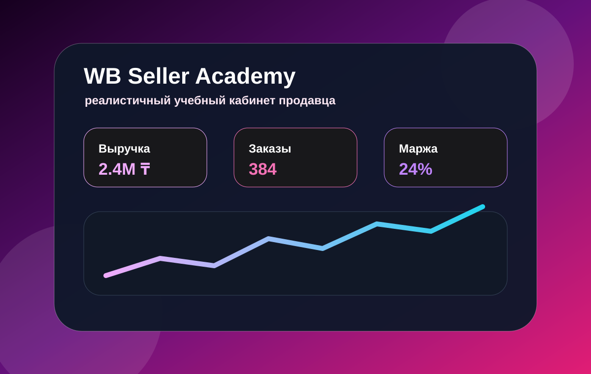
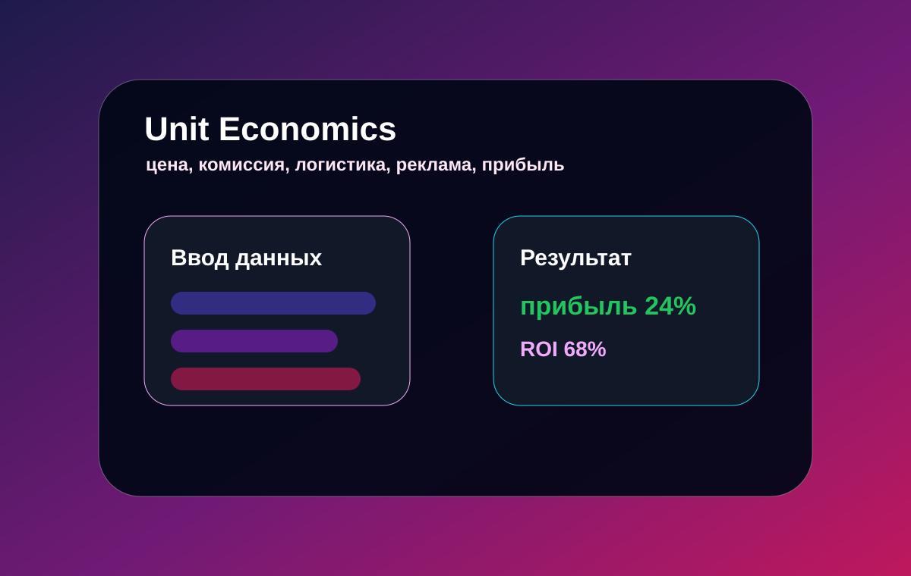

AI
AI Mentor
Можно задать вопрос про товар, карточку, рекламу, аналитику, отзывы, логистику или старт продаж.
Сайт сделан как полноценная обучающая платформа: AI mentor отвечает на вопросы, калькуляторы считают экономику товара, аналитика строит графики, обучение сохраняет прогресс, а форма и медиа работают внутри сайта.

Все основные кнопки, формы, калькуляторы, чат, тест, графики и прогресс обучения работают через JavaScript.
Можно задать вопрос про товар, карточку, рекламу, аналитику, отзывы, логистику или старт продаж.
Считает прибыль, маржу, ROI, комиссию, рекламу, налог, возвраты и логистику.
Строит графики и выдает рекомендации по ДРР, остаткам, возвратам и конверсии.
Сайт содержит минимум три изображения, аудио и видео, как требуется в задании.
Кабинет продавца с KPI и графиком.
Помощник по обучению и разбору вопросов.

Расчет прибыльности товара.
Медиа файлы лежат внутри сайта и открываются на GitHub Pages.
Короткий звуковой файл проекта.
Короткий ролик о функциях сайта.
Это не официальный сайт Wildberries и не подключение к реальному кабинету. Это реалистичный учебный симулятор. Данные в аналитике генерируются локально, а AI Mentor работает как продвинутый помощник без внешнего API.